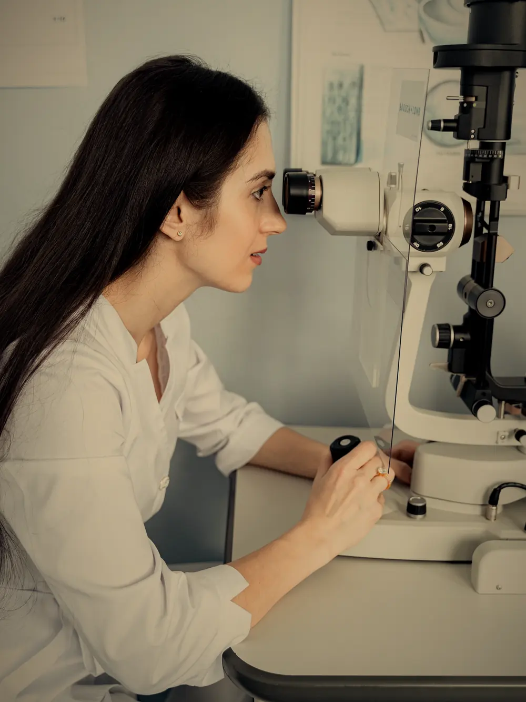
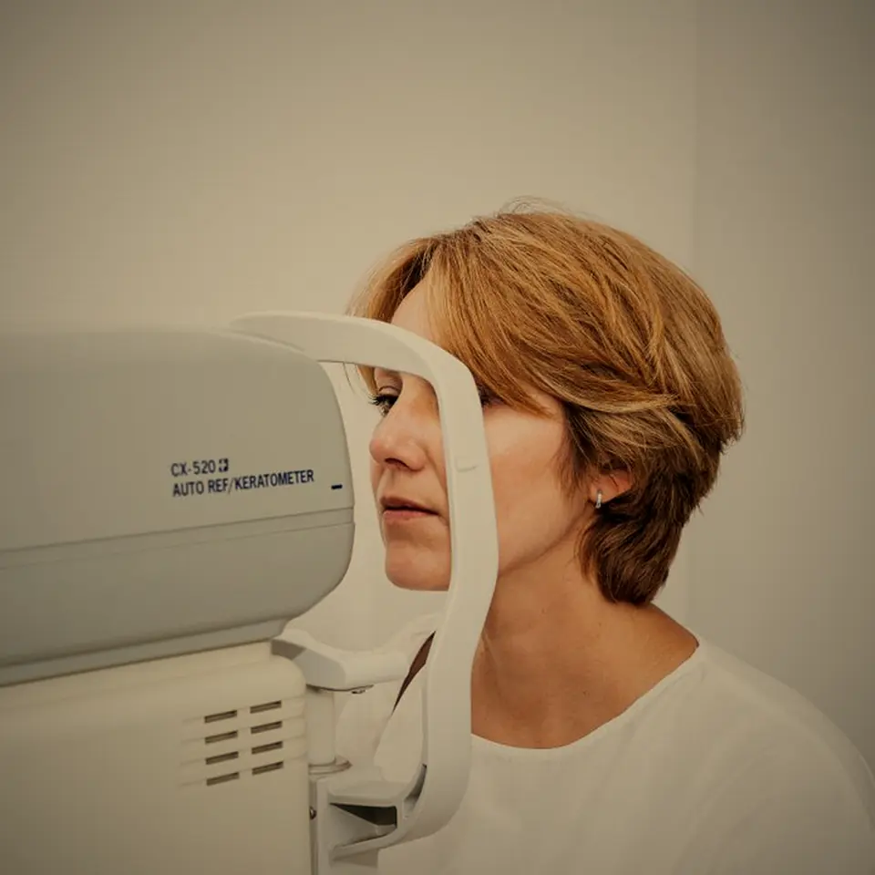
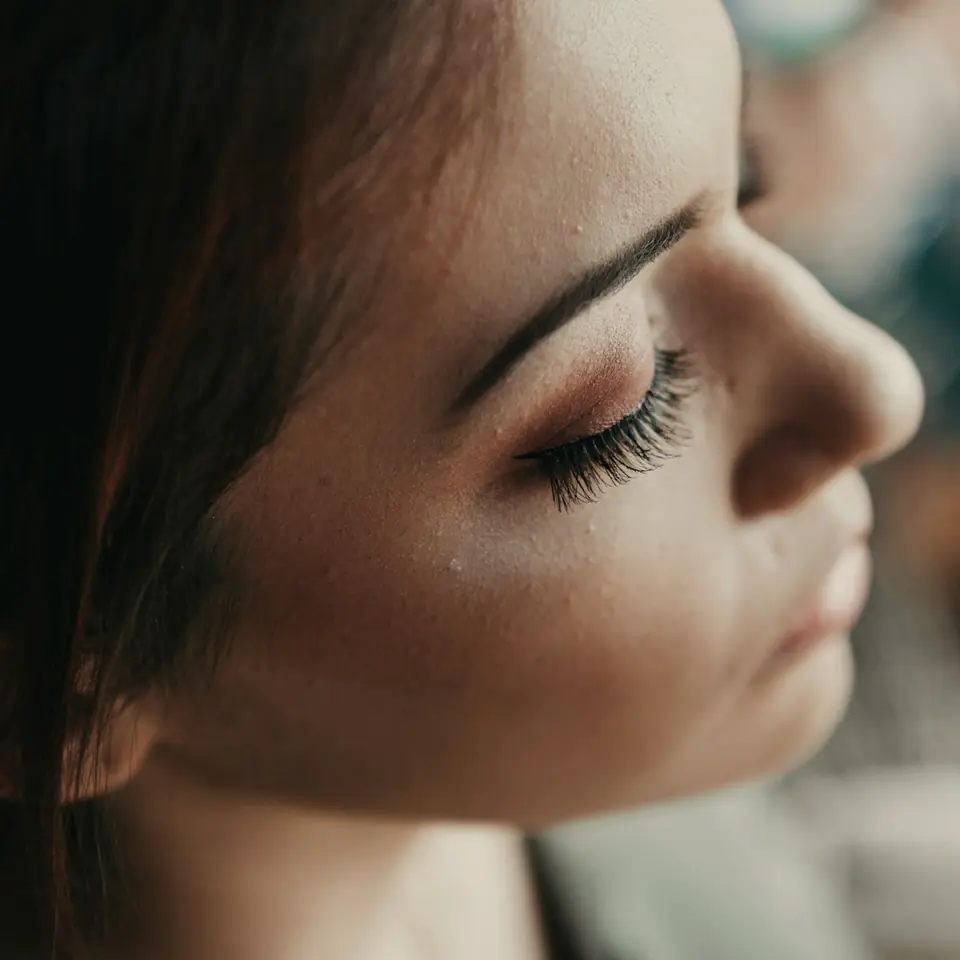
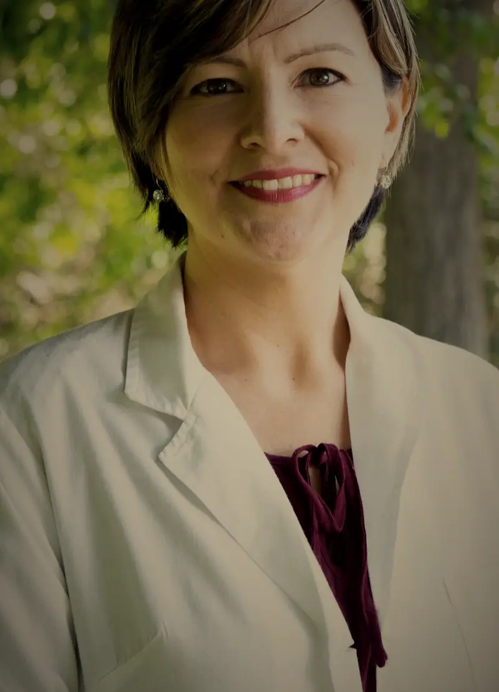

La belleza de ver con claridad
Cirugía de cataratas y de párpados con un enfoque exclusivo y personal, donde cada detalle cuenta: tu visión y tu mirada.
Dos cirugías, una misma exigencia

Cirugía de cataratas
Cuando el cristalino pierde transparencia, la visión se nubla y los colores se apagan. Lo sustituimos por una lente intraocular elegida para tu caso, en una intervención ambulatoria.
- Estudio preoperatorio completo
- Lente intraocular adaptada a tu vista y tu estilo de vida
- Revisiones postoperatorias personales

Cirugía de párpados
La mirada transmite quién eres. Tratamos el párpado caído, el exceso de piel y las lesiones palpebrales buscando un resultado funcional, natural y armónico.
- Blefaroplastia
- Ptosis palpebral
- Chalazión y lesiones del párpado
Rigor médico, atención a medida
“Mi compromiso es que entiendas tu diagnóstico y llegues a la cirugía con total confianza.”
1Diagnóstico preciso
Una exploración minuciosa con lámpara de hendidura, medición de la agudeza visual y de la presión intraocular y revisión del fondo de ojo. Cada prueba se interpreta con calma para entender tu caso antes de plantear cualquier intervención.
2Decisión informada
Te explico la técnica, los resultados que cabe esperar y los riesgos con total transparencia, sin tecnicismos innecesarios. La decisión es tuya, y solo fijamos fecha cuando has resuelto todas tus dudas.
3Seguimiento personal
Te acompaño en cada revisión posterior a la cirugía, desde el primer día hasta tu recuperación completa. Vigilamos la cicatrización, ajustamos el tratamiento y comprobamos que tu visión evoluciona como esperábamos.

Dra. Katia Sotelo
“Cada mirada es única. Mi compromiso es cuidarla con la precisión y el tiempo que merece.”
- Formación
- Licenciatura en Medicina y especialidad en Oftalmología
- Experiencia
- Hospital Universitario de Barcelona
- Sociedades
- Sociedad Española de Oftalmología
- Colegiada
- Nº 08/00000
Antes de tu cirugía
Cualquier otra duda la resolvemos en la consulta de valoración.
¿La operación de cataratas duele?
Se realiza con anestesia local y la mayoría de pacientes solo notan una ligera presión. Es ambulatoria: vuelves a casa el mismo día.
¿Cuándo es el momento de operarse?
Cuando la catarata empieza a limitar tu día a día: leer, conducir o ver la televisión. Lo valoramos en consulta.
¿La cirugía de párpados es solo estética?
No siempre. Un párpado caído puede reducir el campo de visión. Valoramos si la indicación es funcional, estética o ambas.
¿Cómo es la recuperación?
Depende de cada intervención. Antes de la cirugía te explico los cuidados y el calendario de revisiones.
Tu consulta de valoración
Elige día y hora online, en cualquier momento. Recibirás la confirmación por email.